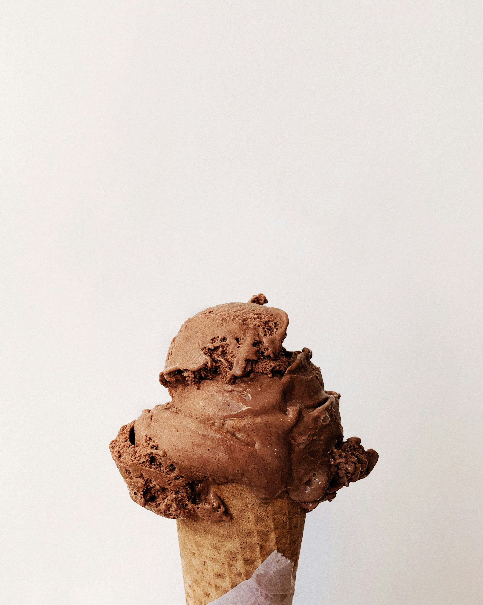

Nos crèmes glacées biologiques
- Vanille de Madagascar
- Vanille et noix de pécan
- Vanille et coulis de caramel beurre salé
- Beurre salé et éclats de caramel
- Chocolat noir 65 % (Weiss)
- Pistache
- Banane
- Noisette crocanti
- Café
- Pralinée et morceaux d’arachide
- Rhum raisin
- Verveine
- Châtaigne d’Ardèche
- Noix de coco
- Menthe et chocolat
80 ml · 65 g3 €500 ml · 400 g8,50 €1 litre · 750 g15 €